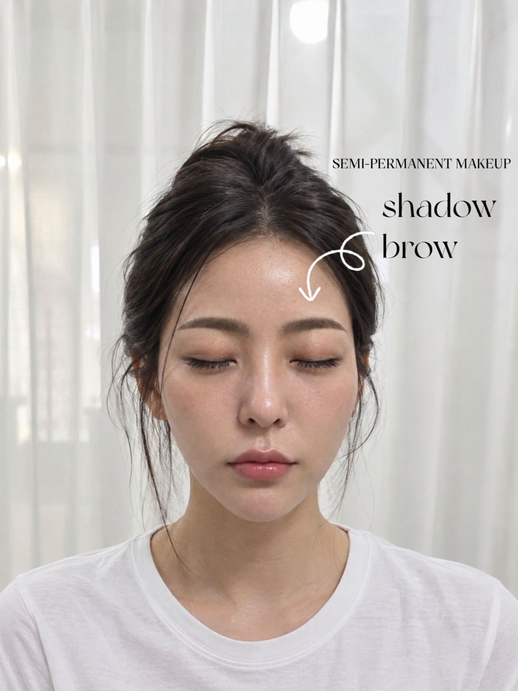
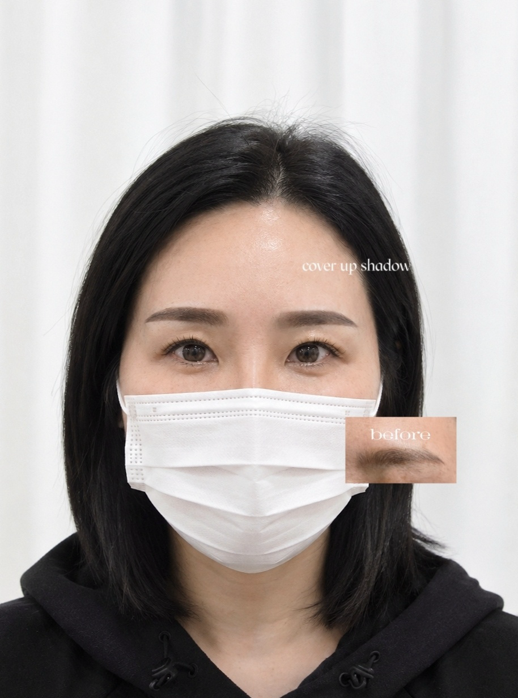
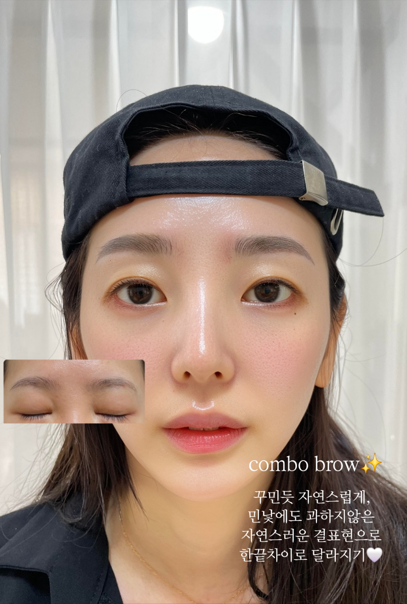
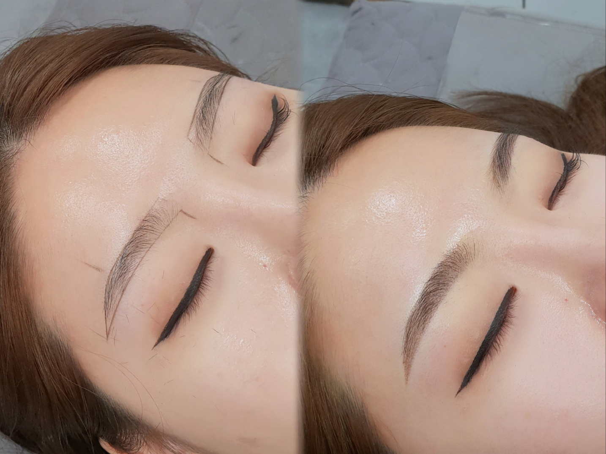
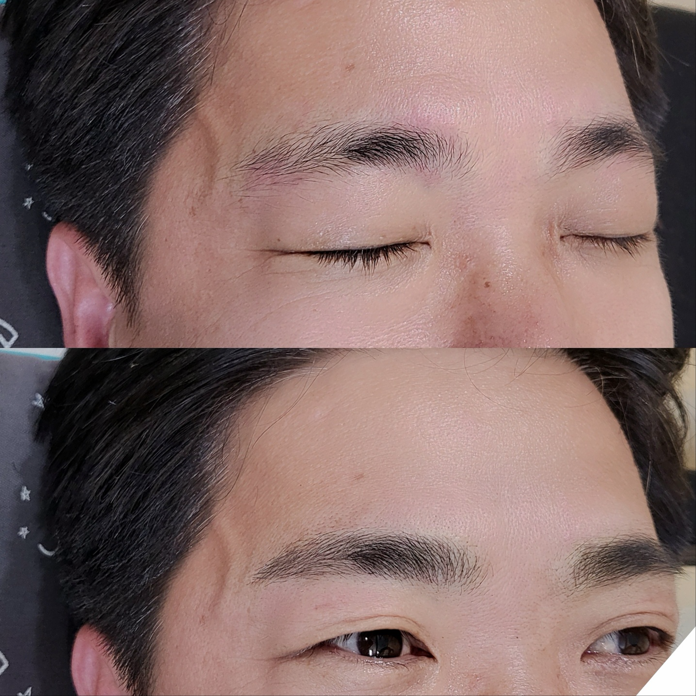

얼굴의 균형
골격과 눈매, 근육의 움직임과 비대칭을 살펴 디자인 방향을 찾습니다.
거제 옥포 · 예쁨을더하다
진해질까 걱정되는 첫 눈썹도,
남아 있는 잔흔 고민도. 상담부터 시작하세요.
이런 고민이 있으신가요?
예쁨을더하다의 디자인 기준
얼굴형, 눈매, 눈썹이 자라는 방향까지.
원하는 느낌과 본래 가진 분위기가 어우러지도록.
골격과 눈매, 근육의 움직임과 비대칭을 살펴 디자인 방향을 찾습니다.
눈썹의 분포와 방향, 기존 잔흔과 피부 상태를 먼저 확인합니다.
평소 메이크업과 원하는 분위기. 자연스러운 결부터 또렷한 표현까지 상의합니다.
실제 눈썹 디자인 사례
자연스러운 눈썹도, 또렷한 눈썹도.
기준은 ‘나에게 어울리는가’입니다.
옆으로 넘겨 시술 사례를 확인해 보세요 →





매장 제공 시술 사례입니다. 피부 상태와 기존 잔흔에 따라 표현·착색·유지 기간에는 개인차가 있습니다.
김진미 원장을 소개합니다
“유행하는 모양을 그대로 따라 하기보다,
고객님이 원하는 분위기를 먼저 듣고 싶습니다.”
오랫동안 찾아주신 고객과 소개로 이어진 만남들.
그 시간 속에서 배운 것은,
같은 눈썹도 사람마다 다르게 어울린다는 점입니다.

상담부터 리터치까지
기존 시술 경험과 잔흔, 피부 상태와 원하는 이미지를 확인합니다.
골격과 눈매, 눈썹 분포를 살피며 어울리는 방향을 함께 찾아갑니다.
1차 작업 후 탈각 상태와 진하기를 상의해 리터치로 보완합니다. 세부 일정은 상담 시 안내합니다.
예약 전 궁금한 점
처음이라도, 잔흔이 남아 있어도.
걱정되는 점부터 편하게 말씀해주세요.
고객별 위생관리와 작업 공간의 청결을 기본으로, 시술 전 피부 상태와 특이사항을 확인합니다.
1차 작업은 부담스럽지 않은 자연스러운 표현을 중심으로 진행합니다. 리터치 시 탈각 상태를 확인하고 원하는 진하기를 상의합니다.
근육의 움직임과 비대칭, 눈썹 분포를 확인하고 평소 메이크업과 원하는 분위기를 함께 살펴 디자인 방향을 찾습니다.
잔흔의 색과 진하기에 따라 달라집니다. 특히 진한 푸른 잔흔은 진행이 어려울 수 있어 현재 눈썹 사진으로 먼저 상담해 주세요.
통증에는 개인차가 있으며 불편함을 느끼실 수 있습니다. 걱정되는 부분과 피부 특이사항은 상담 시 말씀해 주세요.
자연눈썹(엠보) 기준 120,000원부터이며 리터치 포함입니다. 다른 기법과 잔흔 상태에 따른 금액, 리터치 횟수·기한 등 세부 조건은 상담에서 확인해 주세요.
속눈썹펌과 속눈썹연장도 함께 운영합니다. 원하는 디자인과 가능한 일정은 문의해 주세요.
자연눈썹 이벤트 안내
원하는 모양을 정확히 설명하지 못해도 괜찮습니다.
현재 눈썹 사진과 고민부터 보내주세요.
기법·기존 잔흔에 따른 금액과 리터치 세부 조건은 상담 시 안내합니다.
오시는 길
경남 거제시 옥포로20길 9